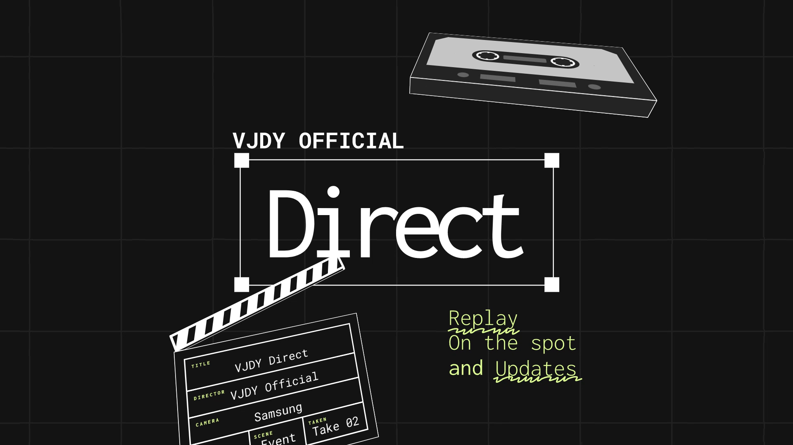

The program
VJDY Direct is a program that shows a spotlight on what's happening now in our paltform, exciting moments and memories. This was started as VJDY On the Spot in 2024 and Spotlight of the Day in 2023. this program is watchable also on Instagram and TikTok.
First Air
This program was started as VJDY Official On the Spot back in 2024. There was a time that I have to share the moment happening on our platform.
The rebranding and downsides
This program was changed from On the Spot to Direct back in 2025 of February. it was aired on Official Plus. Due to no events scheduled. the program doesn't have upload regarding to this program.
The comeback
What is it?
The program will have the comeback after a year! The new home has also to be announced. VJDY Direct will now moved to it's new home, the VJDY Official YouTube Channel! the channel that Radyo Barayti has been recently moved out. aside from Vertical Content, the VJDY Direct will now introduced the long-form content!
New Changes
As you may see on the video, the new graphics and logo of VJDY Direct has been exposed. new soundtracks are very original. The Intro and Outro Track are also very original.
What will begin?
The new VJDY Direct is coming this November 2026! The first episode will be uploaded!
What will be on VJDY Direct?
Selected Events and Occasions will be have taping on production while event was happening. every moment, every scene. we just record it. Our powerful clapperboard is already created. We will buy a better one soon from the one that I found online. Interview will now be implemented! Be sure that you are comfortable to expose on the show! no shy while interview! Our Community Guidelines have this procedures already on how VJDY Direct actually works, and what to do.